OWASP Juice Shop
10TH ANNIVERSARY: Is it still fresh?
https://owasp-juice.shop
Copyright (c) 2014-2024 Björn Kimminich | @bkimminich | infosec.exchange/@bkimminich @jannik@infosec.exchangeOWASP Juice Shop
10TH ANNIVERSARY: Is it still fresh?
https://owasp-juice.shop
Copyright (c) 2014-2024 Björn Kimminich | @bkimminich | infosec.exchange/@bkimminich @jannik@infosec.exchangeThe Idea
2008: Altoro Mutual 
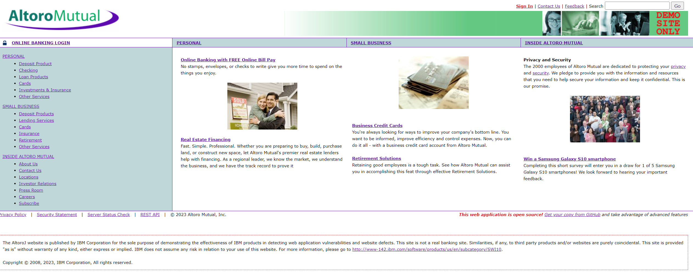
Server-side rendered demo app for a commercial vulnerability scanner
2010: BodgeIt Store 
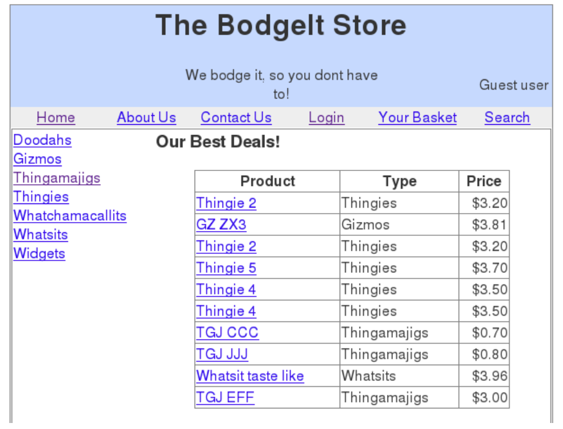
Server-side rendered demo app for the open source vulnerability scanner Zed Attack Proxy
OWASP WebGoat 
(Honorable Mention)
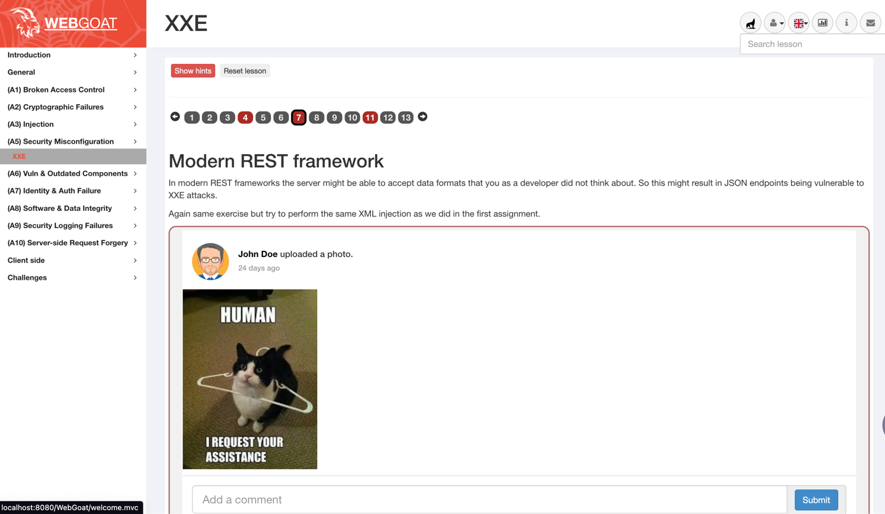Server-side rendered and lesson-based training application
2014: Juice Shop
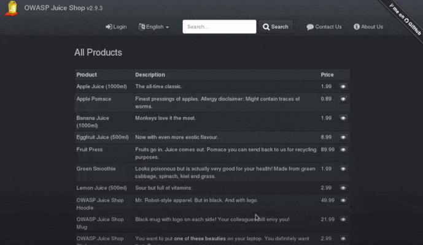Rich Internet Application (RIA) designed for realism, manual exploration and hacking w/ or w/o pentesting tools
2014: Juice Shop
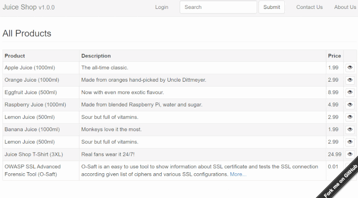Actually, this was the original look-and-feel
2014: Personal "Pet Project"
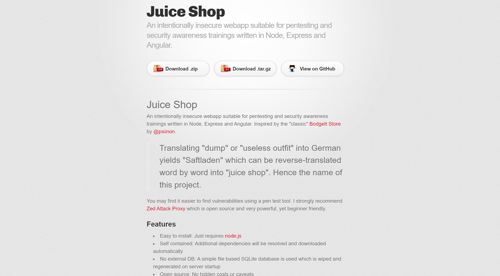2016: Juice Shop joins OWASP
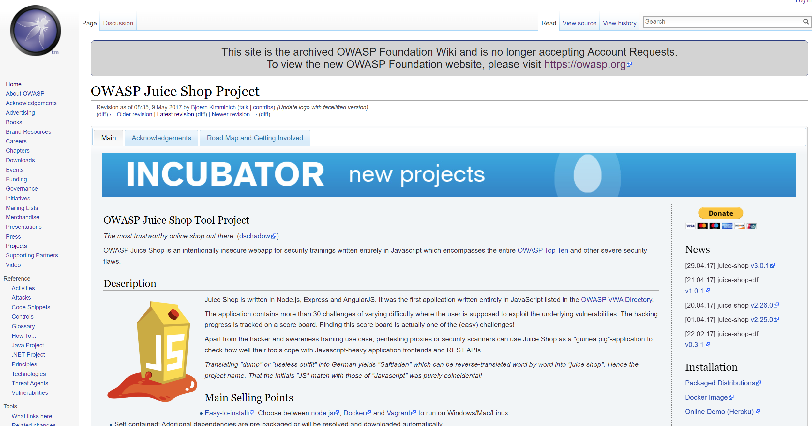2018: Promoted to Flagship
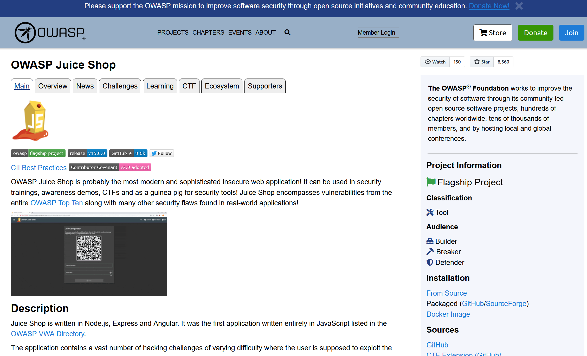The Challenges
2014: 23 Hacking Challenges
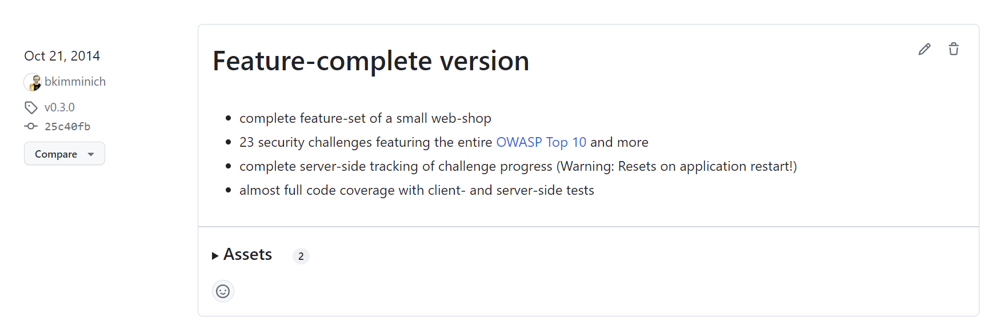Juice Shop v1.0.0 was released October 24th, 2014 with a mix of XSS, SQLi, Access Control and Information Leakage challenges
Now: Hacking Challenges

Challenges in Juice Shop are grouped into various categories mapped to official OWASP, CWE and WASC resources.
2014: Original Score Board
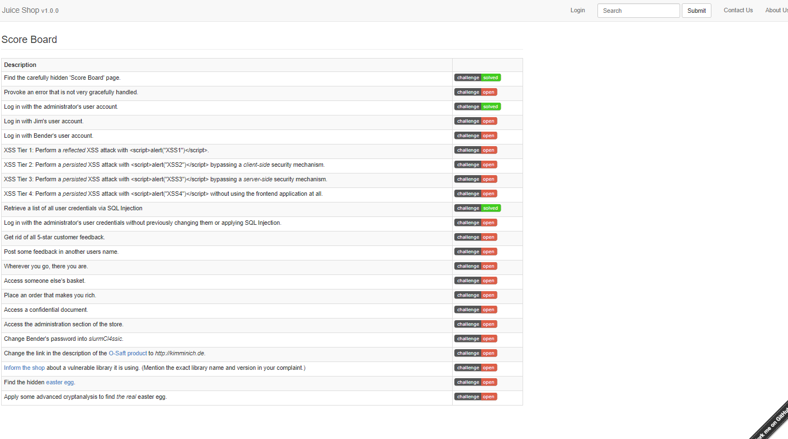2021: Coding Challenges


Identify the underlying code flaw and select an appropriate fix. This is currently available as a follow-up task for challenges
2023: Cluttered Score Board
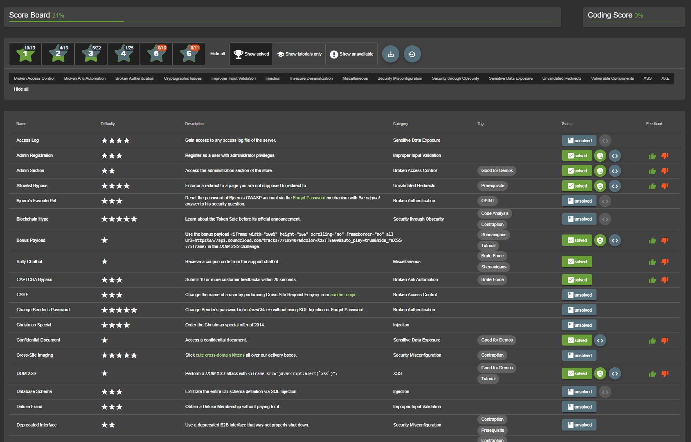Now: Tile-based Score Board
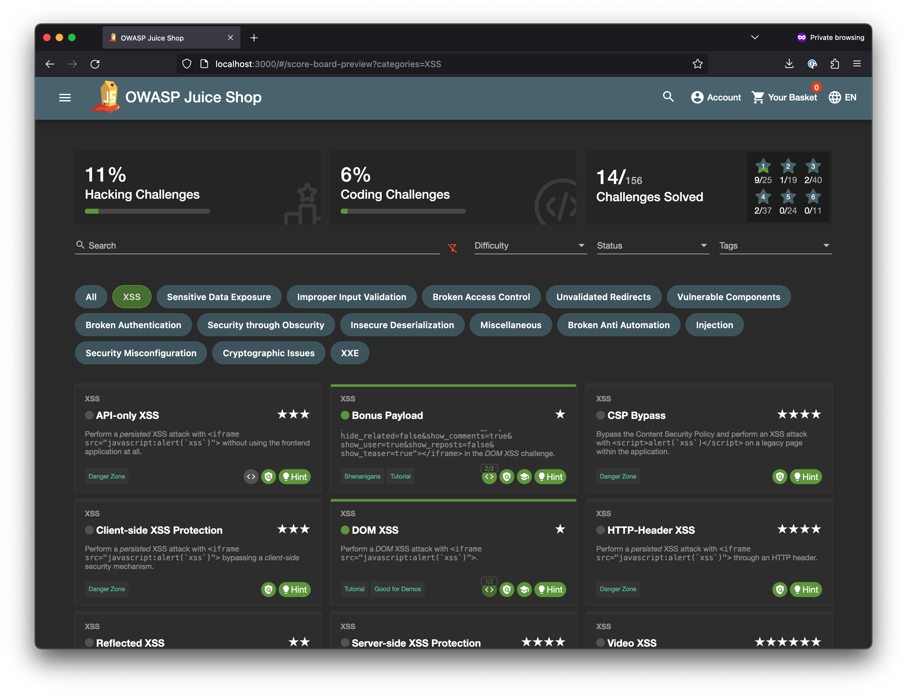The Features
Always: Real Fake Webshop

Juice Shop offers not only the full online shopping use case but also user profile management, 2FA, product reviews, customer services, chatbot assistance, user photo stories and much more
2016: Dedicated CTF-support


Built-in flag notifications and official juice-shop-ctf-cli help setting up hacking events on CTFd, FBCTF or RootTheBox conveniently
2016: Companion Guide


The free official companion guide is available on Leanpub and can also be read online
2017: Theming & Re-branding


Fully customizable business context and look & feel for enhanced immersion in corporate trainings or awareness sessions
2019: Hacking Instructor


Several challenges come with an embedded interactive tutorial helping newcomers to get going
2019: MultiJuicer Platform


Originally an independent project, MultiJuicer became the official platform to run isolated Juice Shop instances for training or CTF participants on a central Kubernetes cluster in 2023
2020: Grafana Dashboard


JSON template allows to import a dashboard into Grafana consuming and displaying all metrics gathered via Prometheus
2020: Solution Webhook
{
"solution": {
"challenge": "localXssChallenge",
"cheatScore": 0,
"totalCheatScore": 0.15,
"issuedOn": "2020-12-15T18:24:33.027Z"
},
"ctfFlag": "b0d70dce...b85fac6785dba2349b",
"issuer": {
"hostName": "fv-az116-673",
"os": "Linux (5.4.0-1031-azure)",
"appName": "OWASP Juice Shop",
"config": "default",
"version": "12.3.0-SNAPSHOT"
}
} Sends a payload to a specified URL whenever a challenge is solved
2021: Cheat Detection

Solved challenges are rated based on cheating probability
2024: Juice Shop LEGO Tower

Huge kudos to Bram Patelski for the design & providing all necessary source files to build your own!
2024: MultiJuicer-To-Go
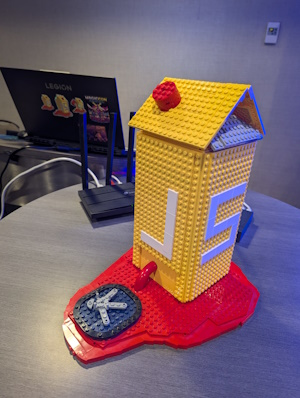 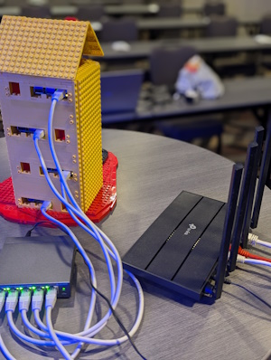 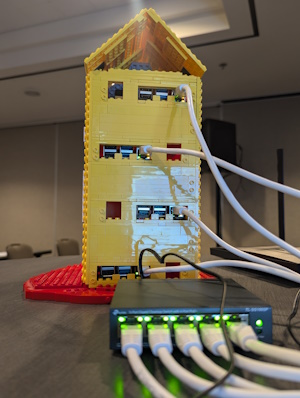 The LEGO case allows to bring a 4x Raspberry Pi cluster with PoE & cooling fans to any training and have MultiJuicer instances running literally out of the box! Also needed: PoE switch, WiFi router, and Internet uplinkThe Technology
2014: "Bleeding-edge" Web-Architecture
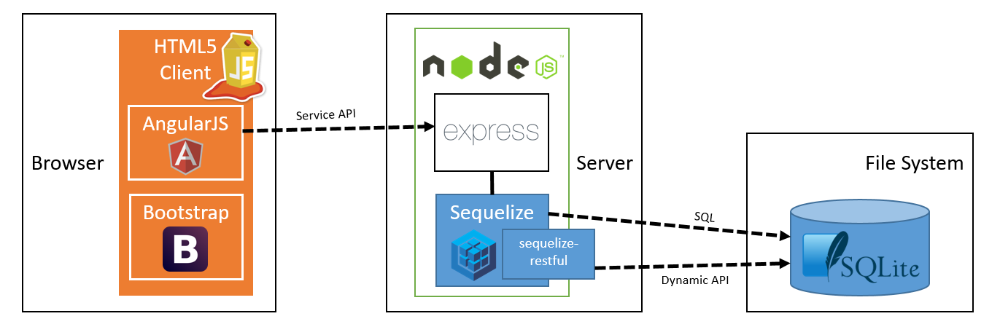2024: "Still-modern" Web-Architecture

Always: Simple Installation


Comes with cloud, local and containerized run options
Always: Test Automation


Comes with suites of client- & server-side unit tests, API tests, and sophisticated E2E tests that "auto-hack" every possible challenge
27.09.2024: v1.0.0 Re-Release
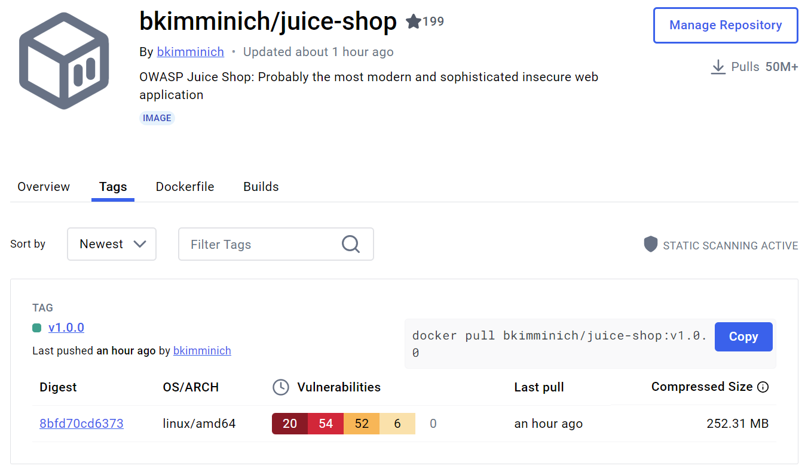
Docker images hadn't been introduced until v7.0.1 in 2017, but you can now experience the first ever Juice Shop with a hand-crafted v1.0.0 anniversary image available on DockerHub
docker pull bkimminich/juice-shop:v1.0.0
The Community
Core Team
| Björn Kimminich | Jannik Hollenbach | Timo Pagel |
Shubham Palriwala |
 |
 |
 |
 |
Literally the A-Team behind the Juice Shop
Top 40+ Code Contributors

Top 20+ I18N Contributors
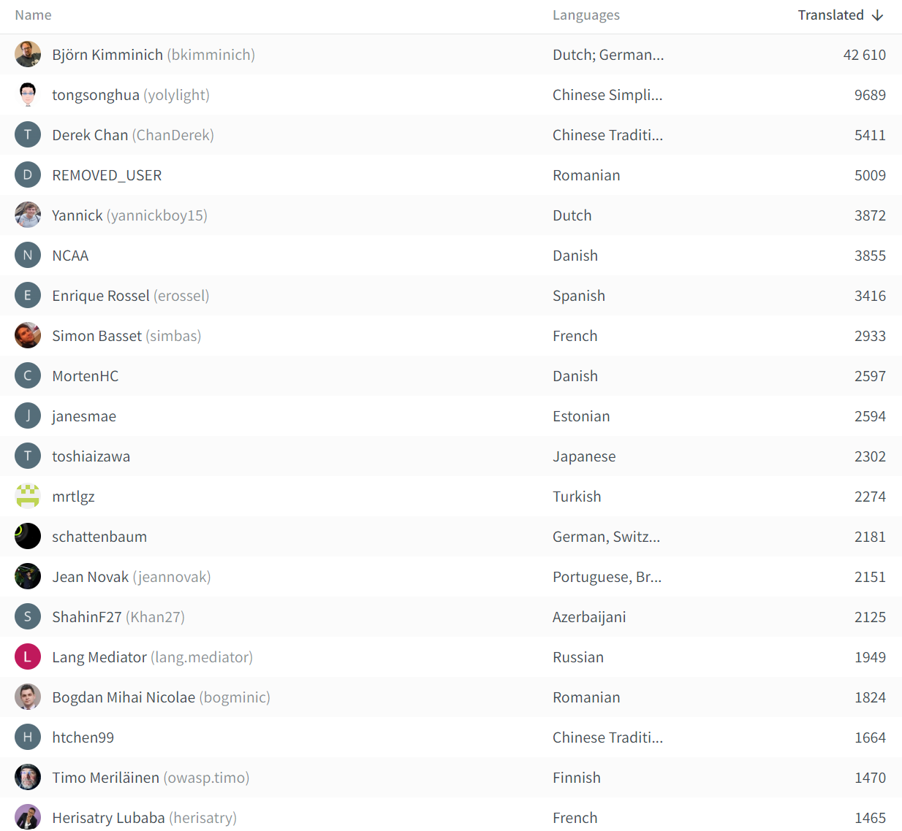Contributions are welcome!


Visit our backlog on GitHub & translations on Crowdin. Issues labelled with good first issue and/or help wanted are the best starting point for new contributors


GitHub Stars over time

Juice Shop Success Pyramid™


2020: Official Jingle
Thanks to podcaster-pentester-singer-songwriter-multi-talent Brian Johnson, Juice Shop is probably one of very few Open Source projects with its own official jingle